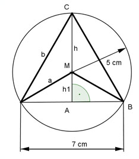

Flächenberechnungen Aufgabe 68 Berechnen Sie die Fläche des Vierecks, sowie die Länge der Seiten a und b.  a = r = 5 cm Satz von Pythagoras im Dreieck ABM: 7 7 a² = h1² + (---)² |-(---)² 2 2 5² - 3,5² = h1² h1² = 25 - 12,25 h1² = 12,75 |√ h1 = 3,6 cm h = h1 + r = 8,6 cm 7 cm (h1 + r) 7 cm * h1 A = ----------------- - ------------ = 2 2 7 cm * (3,6 cm + 5 cm) 7 cm * 3,6 cm A = -------------------------- - ---------------- = 30,1 cm² - 12,6 cm² 2 2 A = 17,5 cm² Satz von Pythagoras im Dreieck ABC: b² = h² + 3,5³ b² = 8,6² + 3,5² b² = 73,96 + 12,25 b² = 86,21 |√ b = 9,3 cm